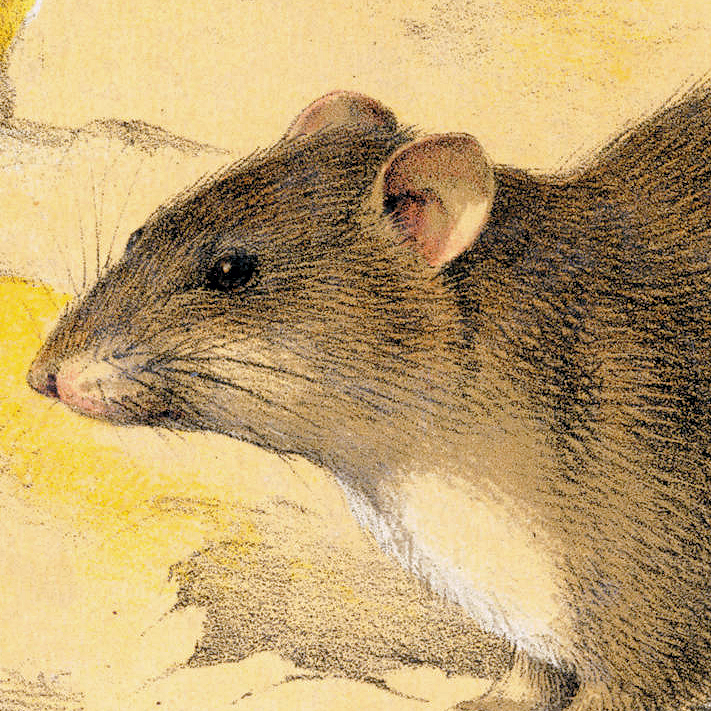

Fiction

"The Black Lamb" - flash - upcoming September 25, 2026 from The Orange and Bee◥
A ghostly black lamb follows Mary to
the new world. Inspired by Lady Wilde, via William Butler Yeats' Fairy and Folk Tales of Ireland.
Animal death (recurring motif throughout the story).

"Did You Know Rats Can Die of Loneliness?" - short story - upcoming from A Midnight Kind of Place◥
Alice's pet rat knows that there's something wrong in her room.
Pet death (several pet rats are in danger, one dies). Pet cannibalism.
Learn more about what I write on my About me page, or ask me a question on my Contact page.